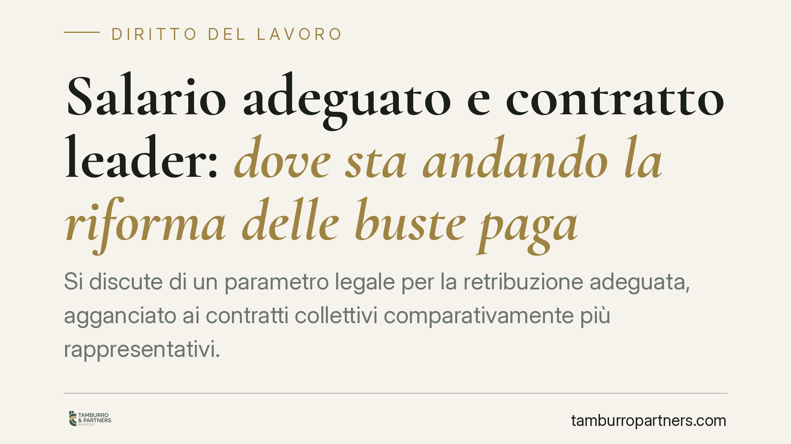

Salario adeguato e contratto leader: dove sta andando la riforma delle buste paga
Si discute di un parametro legale per la retribuzione adeguata, agganciato ai contratti collettivi comparativamente più rappresentativi. L'obiettivo dichiarato è ridurre la discrezionalità del giudice nel determinare il salario giusto e contrastare i contratti "pirata". Il quadro non è ancora definitivo: conviene prepararsi senza dare per vigente ciò che è in itinere.

Premessa metodologica
Sul tavolo del legislatore è in discussione un intervento destinato a fissare per legge un criterio di "retribuzione adeguata". Alcune ricostruzioni giornalistiche fanno riferimento a un decreto in materia e alla relativa legge di conversione, ma al momento della redazione di questo contributo gli estremi puntuali e la pubblicazione in Gazzetta Ufficiale non risultano confermati in modo verificabile.
Per correttezza trattiamo quindi la materia come riforma in corso di definizione, usando il condizionale dove necessario. Non è prudente, per uno studio legale, presentare come diritto vigente una norma di cui non si ha certezza di estremi ed efficacia.
L'ancoraggio costituzionale
Il punto fermo resta l'art. 36 della Costituzione, che riconosce al lavoratore il diritto a una retribuzione proporzionata alla quantità e qualità del lavoro e comunque sufficiente a un'esistenza libera e dignitosa.
Su questa base la giurisprudenza del lavoro ha da tempo individuato, come parametro di riferimento per valutare l'adeguatezza della paga, i minimi tabellari fissati dai contratti collettivi nazionali di categoria. Il giudice, in caso di contestazione, può ricalcolare la retribuzione dovuta ancorandola a tali minimi.
In questo contesto si inserisce anche la Direttiva (UE) 2022/2041 del 19 ottobre 2022, relativa a salari minimi adeguati nell'Unione (estremi da confermare nella versione consolidata), che sollecita gli Stati a rafforzare la contrattazione collettiva e la tutela dei livelli retributivi minimi.
Minimi tabellari e trattamento economico complessivo
Un punto tecnico merita chiarezza, perché spesso genera equivoci.
- I minimi tabellari sono le voci di base previste dal CCNL per ciascun livello di inquadramento.
- Il trattamento economico complessivo è invece la somma di più elementi: minimi, scatti, mensilità aggiuntive, indennità, elementi accessori previsti dal contratto.
La riforma in discussione sembra muoversi verso l'uso di un parametro più ampio dei soli minimi tabellari. Precisiamo però che, allo stato, l'esatto articolo e comma da cui deriverebbe l'adozione del trattamento economico complessivo come parametro vincolante non è confermato: va considerata, per ora, un'elaborazione interpretativa delle intenzioni riformatrici, non una norma consolidata.
Il nodo del "contratto leader"
Il cuore del dibattito è l'individuazione del contratto collettivo di riferimento. L'ordinamento conosce già il criterio dei contratti stipulati dalle associazioni comparativamente più rappresentative sul piano nazionale.
Il problema pratico sono i cosiddetti contratti "pirata": accordi sottoscritti da sigle poco rappresentative, che prevedono trattamenti economici più bassi e vengono utilizzati per comprimere il costo del lavoro.
L'ipotesi allo studio punterebbe a imporre, come base di calcolo, il contratto comparativamente più rappresentativo del settore (il cosiddetto "contratto leader"), riducendo lo spazio per l'applicazione di contratti al ribasso e limitando la discrezionalità del giudice nel ricostruire la retribuzione dovuta.
Decorrenza e regime transitorio
Trattandosi di intervento non ancora stabilizzato, non è possibile indicare una data certa di entrata in vigore né l'eventuale regime transitorio. È un profilo tutt'altro che secondario: da esso dipenderanno i tempi di adeguamento delle buste paga e la gestione dei rapporti in corso. Suggeriamo di monitorare la pubblicazione del testo definitivo prima di modificare le politiche retributive.
Implicazioni pratiche per l'azienda
Per il datore di lavoro il tema è concreto: se il parametro di riferimento diventa il contratto leader di settore, l'applicazione di un CCNL meno oneroso potrebbe esporre a differenze retributive, richieste di adeguamento e contenzioso. L'impatto cresce per le imprese che operano con contratti sottoscritti da sigle minori.
Cosa fare in concreto
- Verificate quale CCNL applicate e quale sia il contratto comparativamente più rappresentativo del vostro settore.
- Mappate la distanza tra il trattamento economico attualmente erogato e quello del contratto leader di riferimento.
- Non modificate ora le buste paga sulla base di anticipazioni di stampa: attendete il testo definitivo e gli estremi ufficiali.
- Documentate inquadramenti, livelli e voci retributive, così da ridurre il rischio in un eventuale contenzioso.
- Pianificate per tempo un confronto con il consulente del lavoro e con lo studio legale sulle ricadute del nuovo assetto.
Disclaimer
Contributo informativo a cura di Tamburro & Partners - Avv. Giuseppe Tamburro. Non costituisce parere legale.
Ogni storia di lavoro ha i suoi tempi.
Se gestisci HR e vuoi un confronto su contenzioso, ispezioni o licenziamenti, scrivi allo studio. Ti rispondiamo entro un giorno lavorativo.